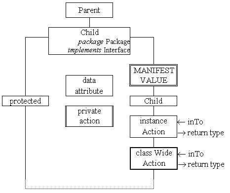

Class Diagrams

The top of the diagram names the class, indicates its parent and states any other relevant details.
Parts shown crossing the right are fully public, those crossing the left are partially public and those contained are fully private.
Parts can be data attributes or actions, can be instance or class wide and, for data attributes, can also be manifest values (constants).
Any action with the same name as the class is a constructor. (Java does not have, or require, destructors (as such)).